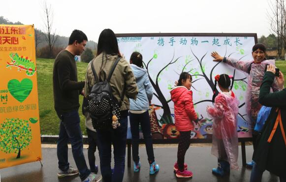
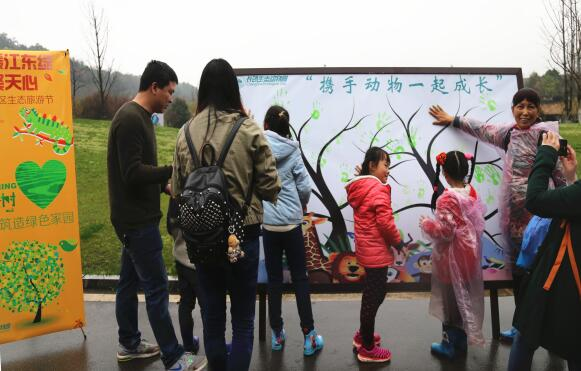

Добро пожаловать на сайт ZOO Zoo~
Учитель-популяризатор разъяснял взаимосвязь между животными и растениями, вызывал у детей сильную тягу к знаниям, активно ставил различные вопросы. Родители и дети в дождевиках копают ямы мотыгами, передвигают деревья и поднимают лопаты. Несмотря на небольшой дождь, энтузиазм по поводу посадки деревьев не уменьшился. Под руководством профессионалов отдела озеленения все сотрудничали друг с другом с большим энтузиазмом и оживленной рабочей сценой. Был посажен саженец. На доске с отпечатками пальмовых листьев зеленые отпечатки рук похожи на зеленые листья, покрытые голыми ветвями, что символизирует надежду и рост.
 
